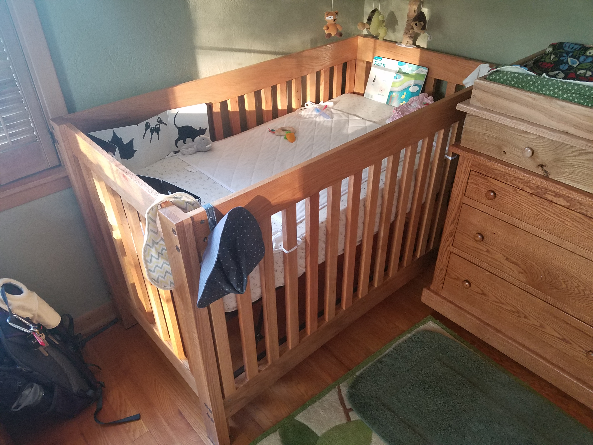

Hello, my name is Sam Wehner.
I'm a problem solver.
I am a seasoned
software professional with experience in insurance, engineering, and data analytics. I've developed state-of-the-art computer vision algorithms, as well as a data model search engine and an algorithmic musical phrase generator.
I am an
Associate of the Society of Actuaries (ASA) and
Member of the American Academy of Actuaries (MAAA). I have in-depth experience developing actuarial data models and calculation engines. For those who may not know, an actuary is a professional who quantifies and qualifies risk, usually financial risks.
I have studied many fields of
engineering, including Ceramic, Aerospace, and Mechanical, and focused on Geological studies over a summer. I worked as an engineering intern for a few summers down in the oil fields of Western Texas and Western Oklahoma, mapping pipelines and programming Remote Terminal Units (RTUs).
I have taught myself to play the
piano, starting back in 2006. Expressing myself through music is a key part of who I am. Music ties it all together.
Here is a recording of a piece I wrote called Forbidden Key.
Photography is a passion of mine. Going to the botanical gardens and taking pictures of the plants and wildlife is a usual adventure when I'm travel about.

I am an avid
woodworker, as well. Building furniture and creating musical instruments are a couple of things I enjoy building in my free time. Below is a picture of the crib I designed and built for my daughter:

Please feel free to contact me at
samcwehner at gmail.com or connect with me on
LinkedIn.